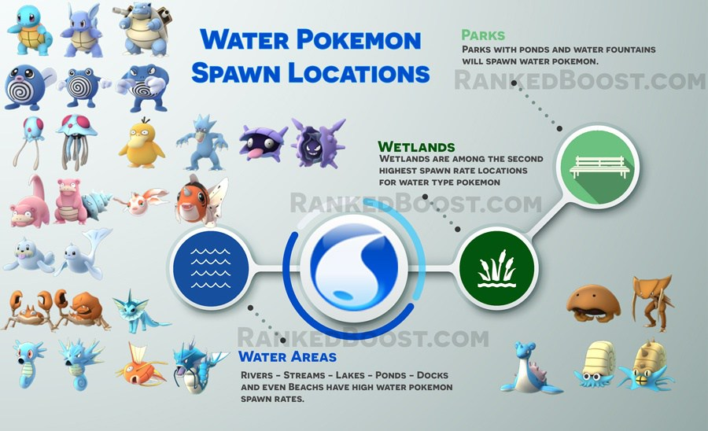

Where Do I Catch Water Pokemon in Pokemon Go: Water Pokemon are fairly easy to catch if you live close to large bodies of water. If not then you will need to find key locations known for water-related landmarks or even small local ponds in your local park are areas you may be able to find water Pokemon.
How To Get Water Type Pokemon Tips:
Where Do I Find Water Pokemon? – ( Water Pokemon Locations )
Confirmed Water Pokemon Go Spawn Locations: Canal – Dock – Harbors – Lake – Ocean – Beach – River – Riverbank – Stream – Wetland – Ports – Reservoir – Basin
Unconfirmed Water Pokemon Go Spawn Locations:
There is a Total of 32 Pokemon Go Water Pokemon: Squirtle, Wartortle, Blastoise, Psyduck, Golduck, Poliwag, Poliwhirl, Poliwrath, Tentacool, Tentacruel, Slowpoke, Slowbro, Seel, Dewgong, Shellder, Cloyster, Krabby, Kingler, Horsea, Seadra, Omanyte, Omastar, Kabuto, Kabutops, Goldeen, Seaking, Staryu, Starmie, Magikarp, Gyarados, Lapras and Vaporeon.
